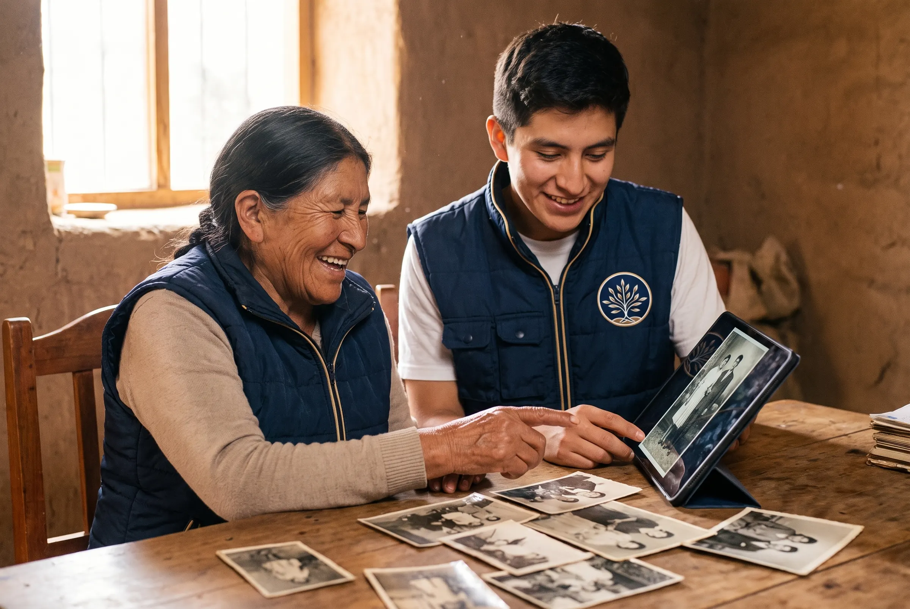
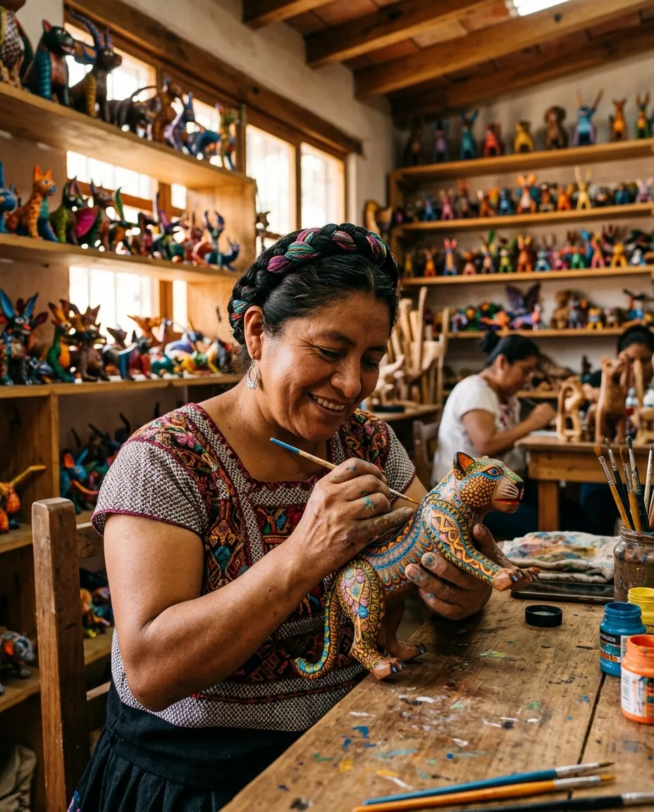
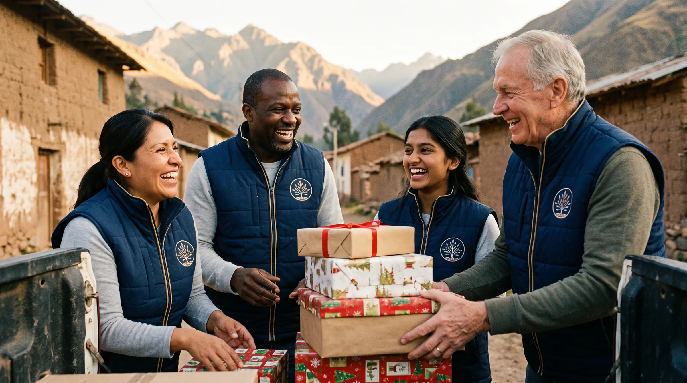
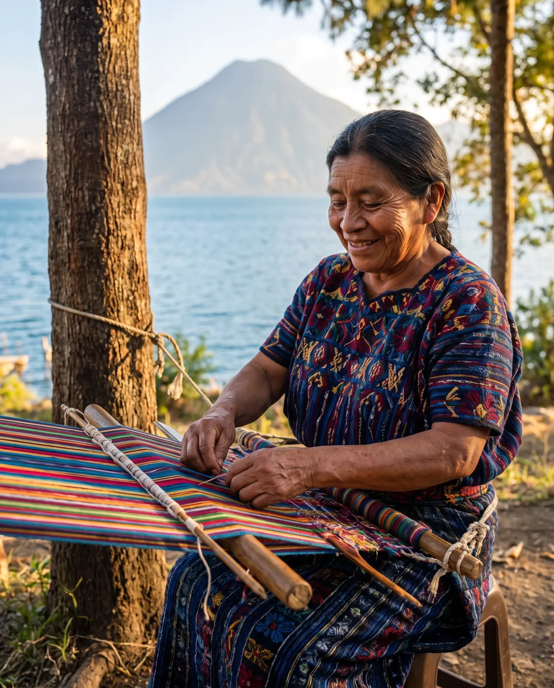

Illustrative01
Preserve
Documenting oral histories, recording traditional music and dance, and preserving artifacts, creating a lasting record shared with the world.
02
Empower
Online platforms that empower artisans to showcase and sell their unique handcrafted products directly to consumers worldwide.
03
Revive
Our annual Christmas aid program brings joy and support to children in impoverished areas, ensuring they experience the warmth and spirit of the holiday season.
04
Share
Timeless Frames envisions a world where every individual, community, and culture is celebrated and supported through the universal language of art and philanthropy.